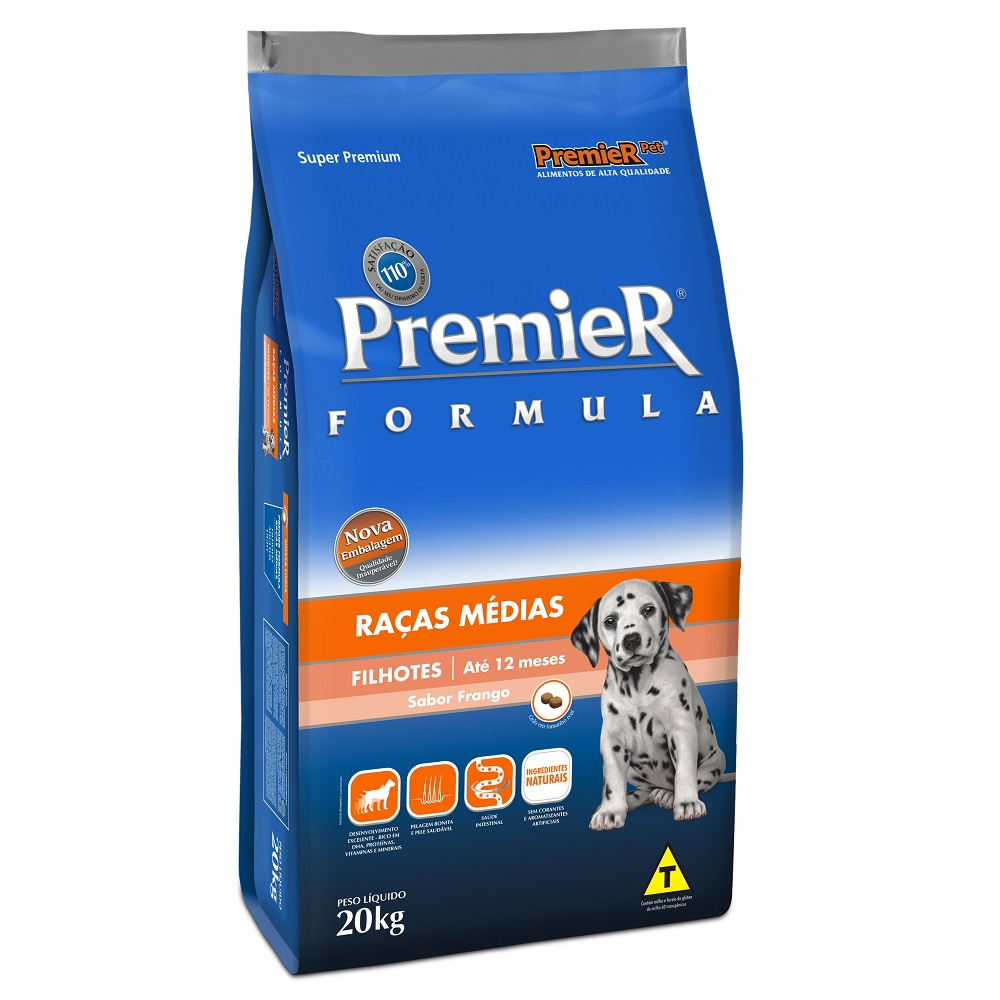
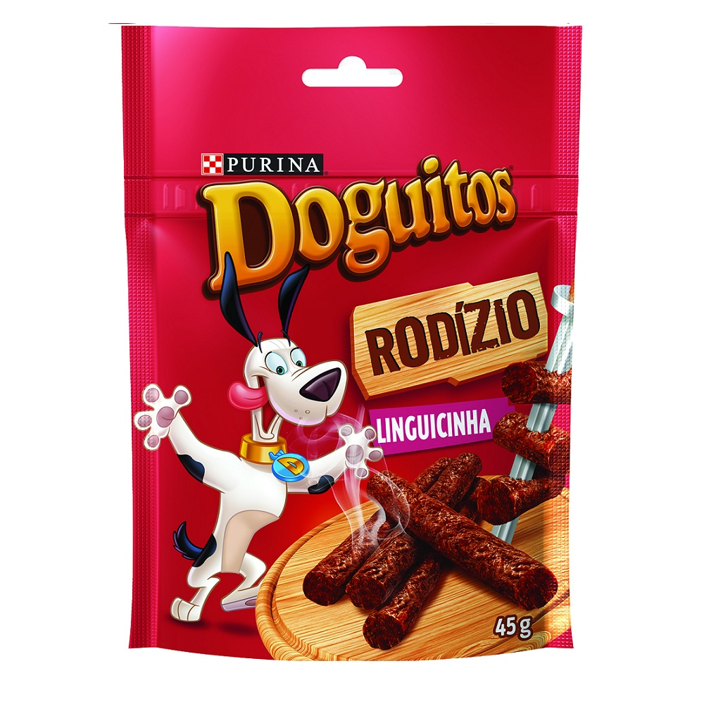
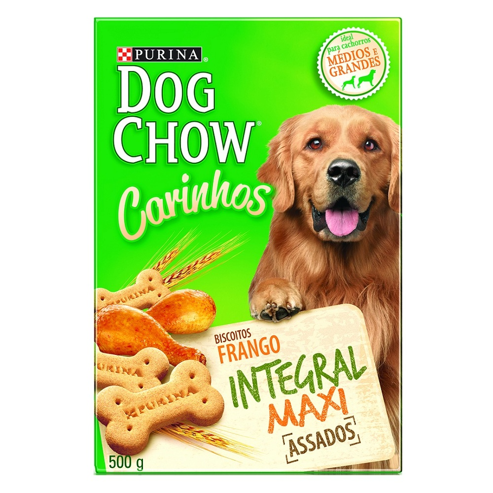
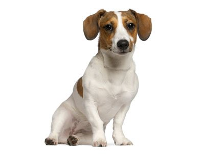
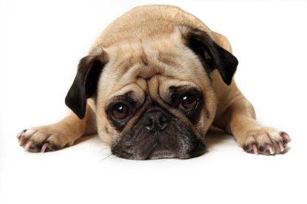
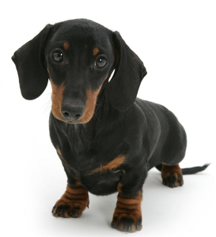

Ração golden

Ração Premier Filhotes

Petiscos

Biscoito Dog Chow
Doação de Cachorro
Adotar um cachorro é uma ação que ajuda no desenvolvimento dos seus filhos e também pode ser uma solução para quem fica muito sozinho, principalmente os idosos. Eles são animais fiéis e trazem alegria para o ambiente familiar, por isso, a cada dia mais, as feiras de adoções recebem indivíduos interessados em dar seu tempo a um cão. Para que você fique ainda mais perto de levar um amigo de quatro patas para casa, não deixe de conferir os Eventos Petz em nosso blog. É possível encontrar cães de todos os portes e idades, garantindo muito mais saúde para todos.

Fox paulistinha

Buggy

Basset